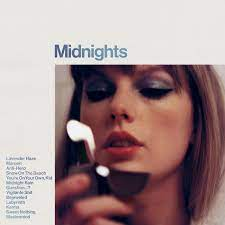
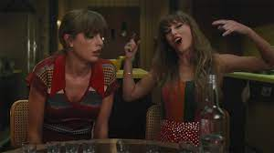
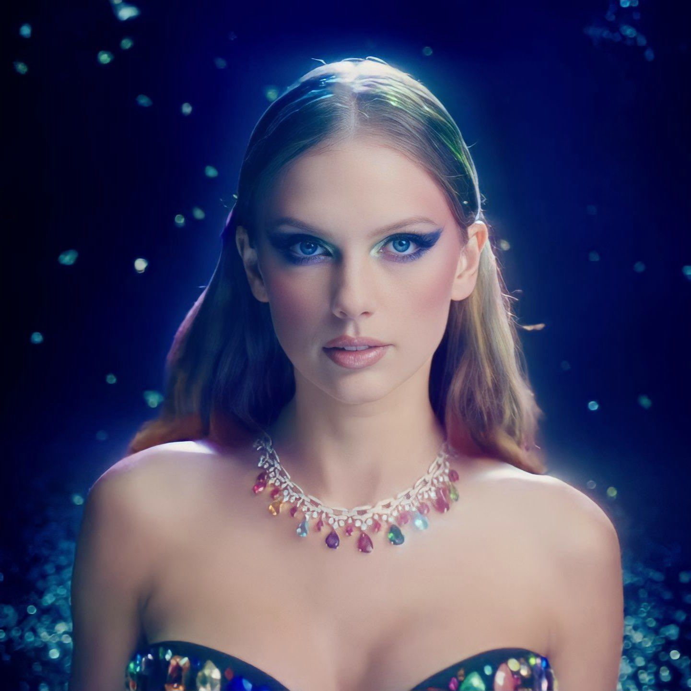

Taylor Swift Releases New Album Midnights: Listen and Read the Full Credits
By Allison Hussey and Jazz Monroe October 21, 2022
Lana Del Rey, Jack Antonoff, Zoë Kravitz, Joe Alwyn, Jahaan Sweet, and more contributed to Swift’s follow-up to Evermore

Taylor Swift released her new album Mignights on October 27th
Taylor Swift has released her 10th studio album, Midnights, which she announced while accepting the trophy for Video of the Year at MTV’s Video Music Awards in August. In addition to the Lana Del Rey collaboration “Snow on the Beach,” Midnights features production and instrumentation from Swift’s longtime collaborator Jack Antonoff. Listen to the album and check out the credits below. (Pitchfork earns a commission from purchases made through affiliate links on our site.)
Three hours after releasing Midnights, Swift unveiled the “special very chaotic surprise” she had promised: a “3am Edition” of the album, featuring seven songs made “on the journey” to the proper album.
Midnights notably features contributions from Zoë Kravitz and Swift’s boyfriend Joe Alwyn (under his pseudonym William Bowery). There are also numerous contributions from Jahaan Sweet, who is known for his work with Baby Keem and Kendrick Lamar, among others. Other contributors include Sam Dew and Sounwave, who are in the band Red Hearse with Jack Antonoff, as well as members of Antonoff’s Bleachers live band, Evan Smith, Mikey Freedom Hart, Sean Hutchinson, Michael Riddleberger, and Zem Audu.
The “3am Edition” features three songs with Aaron Dessner, who worked closely on Folklore and Evermore but does not appear on the main Midnights album. On one of those three, “Would’ve, Could’ve, Should’ve,” the National’s Bryce Dessner and Bryan Devendorf also feature. Bon Iver’s Justin Vernon is credited among studio personnel and as an engineer on the track. Another of Dessner’s co-writes, “High Infidelity,” features contributions from Big Thief drummer James Krivchenia.
“Midnights is a collage of intensity, highs and lows and ebbs and flows,” Swift wrote on Twitter shortly after the release of her new LP. “Life can be dark, starry, cloudy, terrifying, electrifying, hot, cold, romantic or lonely. Just like Midnights.” She added that the record “is a wild ride of an album and [she] couldn’t be happier that [her] co pilot on this adventure was @jackantonoff.” Swift continued, “He’s my friend for life (presumptuous I know but I stand by it) and we’ve been making music together for nearly a decade.” Swift also thanked many of her additional collaborators, such as Del Rey, Kravitz, and more.

Taylor Swift directed her music video for her new track "Anti-hero"
Prior to releasing Midnights, Swift shared a teaser trailer for the record’s forthcoming music videos. The clip compiles several different scenes from as yet unreleased Midnights visuals, indicating appearances from Laura Dern, Jack Antonoff, Haim, John Early, Mike Birbiglia, and Dita Von Teese. Mary Elizabeth Ellis, Pat McGrath, and Laith Ashley are also listed in the credits. Swift will appear on the next episode of New Music Daily on Apple Music, during which she will discuss the meaning of her song “Karma.” “So one of the themes about Midnights is how you’re feeling in the middle of the night and that can be intense self-hatred you go through these very polarizing emotions when you’re up late at night and you’re brain just spirals, it can spiral downward or it can spiral way up and you can just be really feeling yourself,” she said of the song.
She continued: “‘Karma’” is written from a perspective of feeling like really happy really proud of the way you life is, feeling like this must be a reward for doing stuff right and it’s a song that I really love because I think we all need some of those moments you know we can’t just be beating ourselves up all the time. You have to have these moments where you’re like you know what karma is my boyfriend and that’s it.”
After announcing Midnights from the VMAs stage over the summer, Swift began sharing some of its track titles in weekly TikToks. She revealed the full tracklist in early October, a few weeks after she posted a behind-the-scenes video indicating that Antonoff had contributed to the record. She has said the album is “the stories of 13 sleepless nights scattered throughout [her] life.” The album includes a track titled “Karma,” a title which has been the subject of years-long fan speculation that Swift wrote material—possibly even an entire album—about her 2016 feud with Kanye West and Kim Kardashian.
Midnights is Swift’s first all-new LP since she released Evermore and Folklore in 2020. After making a guest appearance on an update of Ed Sheeran’s “The Joker and the Queen” earlier this year, Swift shared a new song titled “Carolina” for Olivia Newman’s film adaptation of Delia Owens’ 2018 novel Where the Crawdads Sing. Swift’s other odds and ends between records have included a remix of Haim’s “Gasoline” and vocal contributions to two tracks on Big Red Machine’s 2021 album How Long Do You Think It’s Gonna Last?

Taylor Swift wore jewls in her new single "Bejewled"
As Swift has kept releasing new work, she has continued her efforts to re-record all of her pre-Lover material after Scooter Braun’s controversial sale of her masters in 2019. Braun recently said that he had “regrets” over how the sale transpired and its outcome. Swift, meanwhile, has not yet indicated which of her earlier records will next get an update. TMZ reported that Swift had turned down an invitation to play the 2023 Super Bowl halftime show in order to focus on recutting her material. Last week, it was confirmed that Swift submitted Red (Taylor’s Version) for Grammy consideration. The original LP had been nominated for Best Country Album and Album of the Year in 2014, but lost to Kacey Musgraves’ Same Trailer Different Park and Daft Punk’s Random Access Memories, respectively. Swift had declined to submit Fearless (Taylor’s Version) for consideration in 2021, citing a focus on campaigning for Evermore for the awards season. The new version of Red included a 10-minute take of “All Too Well,” which set a new record for the longest song to top the Billboard 200 upon its release.
Swift set another record at the VMAs this year with her latest Video of the Year trophy, for the extended “All Too Well.” The self-directed video, which stars Stranger Things’ Sadie Sink as Swift’s analog, is eligible for an Academy Award nomination in the Best Live-Action Short Film category; those nominations won’t be announced until late January. In September, Swift was named the Songwriter-Artist of the Decade by the Nashville Songwriters Association International after receiving an honorary fine arts doctorate from New York University in the spring. Her activities have stretched beyond the music realm with her recent big-screen turn in David O. Russell’s Amsterdam, which follows her 2019 appearance as a CGI feline in Cats.
New tracks
stream count
billboard rank